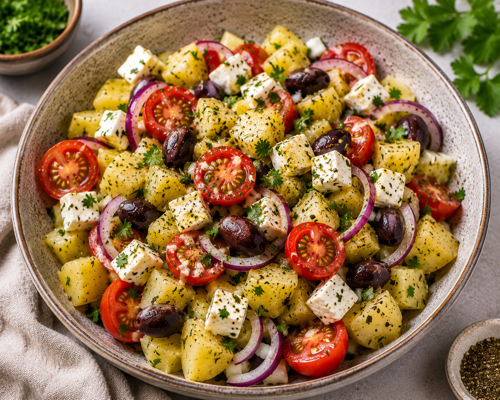

Griechischer Kartoffelsalat
Beschreibung
Dieser griechische Kartoffelsalat bringt mediterranes Flair auf den Teller. Kartoffeln treffen auf saftige Cherrytomaten, rote Zwiebeln, würzigen Feta und aromatische Oliven. Verfeinert mit frischer Petersilie und einem leichten Dressing entsteht ein frischer und ausgewogener Salat, der sich ideal als Beilage, leichtes Hauptgericht oder für warme Sommertage eignet.
Zutaten
Angabe für 2 Personen
- 400 g Kartoffeln
- 100 g Cherrytomaten
- 1 bis 2 mittelgroße rote Zwiebeln
- 150 g Feta (oder Hirtenkäse)
- 40 g Oliven (ohne Stein)
- 1 EL Essig
- 1 EL Olivenöl
- etwas Petersilie
- etwas Salz
- etwas Pfeffer
Zubereitung
- Wasser mit Salz aufkochen.
- Die Kartoffeln waschen, schälen und für 15 bis 20 Minuten, abhängig von der Größe, kochen lassen.
- Die Cherrytomaten waschen und halbieren.
- Den Feta Käse in Würfel schneiden.
- Die Zwiebeln halbieren und in Halbringe schneiden.
- Die fertig gekochten Kartoffeln aus dem Topf nehmen, bei Bedarf mit kaltem Wasser abschrecken und in Würfel schneiden.
- Alles zusammen in eine große Schüssel geben.
- Jetzt noch die Petersilie klein hacken und zusammen mit dem Essig und Öl zu einem Dressing vermengen.
- Das Dressing drüber geben, Oliven hinzufügen und nochmal mit Salz und Pfeffer abschmecken.
Weitere Anmerkungen
- Der Kartoffelsalat schmeckt sowohl lauwarm als auch gut gekühlt.
- Für ein besonders mediterranes Aroma können zusätzliche Kräuter verwendet werden.
- Der Feta sollte erst kurz vor dem Servieren hinzugefügt werden, damit er seine Konsistenz behält.